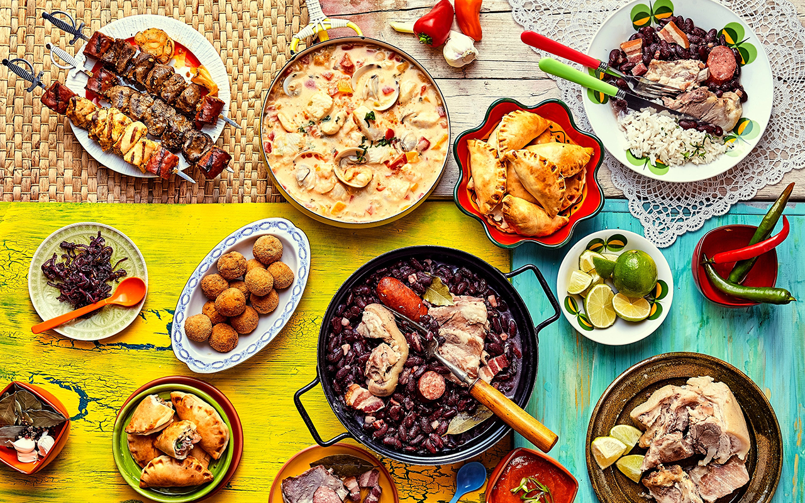

La Moqueca de Peixe es un plato tradicional de la cocina brasileña que consiste en un guiso de pescado con cebolla, pimiento, tomate, cilantro, pimiento, aceite de palma y leche de coco. Esta exquisita preparación destaca por su combinación de sabores y su rica textura.
Esta deliciosa preparación es uno de los legados indígenas que ha resistido el paso del tiempo; de hecho, en documentos históricos se registra el uso de la palabra "Moqueca" por primera vez en 1554. Es curioso, pero en Brasil existen dos versiones del plato, una originaria de la provincia de Bahía y otra del estado de Espírito Santo. Ambas regiones disputan la autenticidad de la receta original.
Comer en Brasil
Restaurantes de Brasil

Muchos de los restaurantes de Brasil tienen gastronomía típica del país. Para entrar un poco en materia, la gastronomía brasileña se basa en la de la cultura indígena, europea y africana.
Lugares donde comer en Brasil hay muchos. De hecho, todas las ciudades tienen sus bares y restaurantes donde probar buenos platos típicos.
Pero cierto es que no toda la gastronomía es la típica del país. Por todas las ciudades hay restaurantes de comida de otras nacionalidades (americana, mexicana, alemana,…) aunque ya que vas a Brasil, lo suyo es probar la brasileña, ¿no?